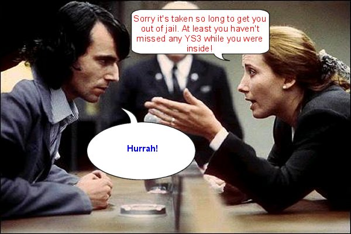

| Next Month in the Earth's second latest Speccy zine... |
|  |
| The Z80 Knights do something clever with sprites! Find out how many young lovelies reply to Nathan's plea! A hilarious new feature we couldn't possibly tell you about yet! All this and much, much more! YS3 Issue 15 January 2003 Back for the winter - let celebrations commence! |